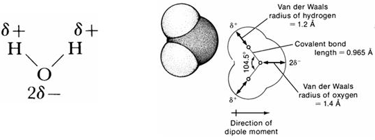
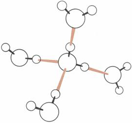

Many cells in the body have highly sophisticated electrical signaling mechanisms. These mechanisms allow electrical impulses to travel within and between the cells of the nervous system. Electrical signaling translates ‘thought’ into action by triggering contractions in muscle and facilitates the control of organs within the body by triggering the release of hormones from various endocrine organs.
Water is a polar molecule, (Figure 1).

Water can form hydrogen bonds between the positively charged hydrogen atoms and negatively charged oxygen atoms in the neighboring water molecules. Since the angle between the two covalent bonds of water is about 105°, groups of hydrogen-bonded water molecules form tetrahedral arrangements (Figure 2).

By itself pure water is not a good conductor of electricity. The conduction of electrical current by an aqueous solution depends primarily on the number and nature of the charged ions found in that solution. These ions can dissolve in water because of the polar nature of water molecules. Water is generally a good solvent for ionic compounds, which include salts, acids and bases. These solutes all share the property of dissociating into ions when dissolved in water.
The events leading to the evolution of cellular life are very poorly understood. This ancient, apparently unique, historical event cannot be readily replicated, making it inaccessible for systematic study. Consequently, most writing on this topic remains highly speculative, if not hopelessly deluded. Even a fundamental question such as whether the pathway towards life began first with replicating nucleic acids or from a protein based origin currently remains unresolved.
Although the steps leading to the evolution of membrane bound, cell based life are not well understood there are several well defined physical constraints that definitely had to be resolved before this could occur. Three particular problems were:
Transport of metabolites across the cell membrane
Regulation of internal calcium concentration
Regulation of osmotic balance/cell volume
The solutions selected for these problems set the basic plan for all subsequent cellular life and reverberate to the present day. Much of the particular functionality of the neurons in your brain derive from the solutions selected several billion years ago to resolve these narrow apparently simple physical problems. The rest of this chapter and the next describe the basic solutions to these problems.
Plotly:1:Plotly
The solutions selected for these problems set the basic plan for all subsequent cellular life and reverberate to the present day. Much of the particular functionality of the neurons in your brain derive from the solutions selected several billion years ago to resolve these narrow apparently simple physical problems. The rest of this chapter and the next describe the basic solutions to these problems.